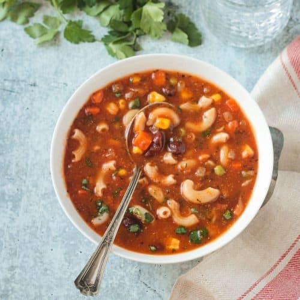

Minestrone

Description
An italian tomato based vegetable soup, made hearty with the addition of pasta and beans.
Ingredients
vegetable broth, one quart
tomato paste, small can
one medium carrot, diced
celery, 3 stalks, diced
one large onion, diced
garlic, 3 large cloves, minced
one bunch of spinach
pasta, small shells, half a box
chick peas, one can, drained
one quart of water
oregano, one tablespoon
chili flakes, a pinch
salt and pepper, to taste
olive oil, one tablespoon
Steps
pour olive oil into a heavy bottomed pot on medium heat.
when the oil is hot, add the carrots, celery, and onions. cook until the onions begin to turn transluscent and the carrots begin to get soft.
add tomato paste, chili flakes, oregano and garlic, stir while cooking just until garlic starts to get color.
add broth, water, and chick peas, raise heat, bring to a boil. taste the broth and add salt and pepper to your liking.
simmer for ten minutes.
add pasta, cooking for a minute less than recommended on the box.
add spinach.
simmer for a minute more, then turn off the heat, let cool slightly, and enjoy.
Notes
any preferred pasta shape can be used
vegetables can be added or taken away as the cook sees fit
any bean can also be used
can be garnished with parmesan, or nutritional yeast to keep vegan
Home